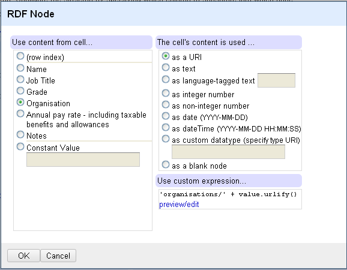

RDF Extension for Google Refine
RDF Extension for Google Refine allows exporting data of Google Refine projects in RDF format.
The export is based on mapping the data to a template graph which can be defined through a graphical interface.
Download RDF Extension for Google Refine
v0.2.1 (alpha), released 2010-10-27Quick Start Top ^
You need to have Google Refine (version 2.0 or later) installed on you machine (see download page)
- Download Google Refine Extension
- Unpack the downloaded archive into an extensions directory under your user workspace directory for Google Refine.
The latter should be findable in the following places depending on your operating system:
- Linux ~/.local/share/Google/Refine/extensions
- Windows C:/Documents and Settings/
/Application Data/Google/Refine/extensions - Mac OSX ~/Library/Application Support/Google/Refine/extensions/
- Restart Google Refine (you should see an RDF small button next to Freebase button on the upper right corner)
note:if extensions folder does not exist just create it
note:if you couldnot find the Refine folder on Windows, try C:/Documents and Settings//Local Settings/Application Data/Google/Refine/extensions
note:Upon the first running of the extension, it will try to download a set of predefined vocabularies (rdf, rdfs and owl) so it is recommended
that you have internet access. You still can download them later anyway.
Main Features Top ^
- Graphical interface to define the mapping
- Vocabulary management (add, delete, import...)
- Autocomplete for properties and classes names
- RDF/XML and Turtle export
Example Top ^
This is a simple example showing how RDF can be extracted from a sample CSV file (you can download the whole project and then directly import it in Google Refine)
The first few lines of the sample CSV file is shown in the table below.
This data is the highest-earning senior civil servants in UK as published by the Cabinet Office on 1 June 2010.
The intended RDF we want to export should look like (for the first line):
| Name | Job Title | Grade | Organization | Annual pay rate - including taxable benefits and allowances | Notes |
|---|---|---|---|---|---|
| Stephan Wilcke | Chief Executive Officer | Asset Protection Agency | £150,000 - £154,999 | ||
| Jens Bech | Chief Risk Officer | Asset Protection Agency | £165,000 - £169,999 | No pension | |
| Ion Dagtoglou | Chief Invesment Officer | Asset Protection Agency | £165,000 - £169,999 | No pension | |
| Brian Scammell | Chief Credit Officer | Asset Protection Agency | £130,000 - £134,999 | 4 days per week |
<http://lab.linkeddata.deri.ie/test/0> a foaf:Person ;
foaf:name "Stephan Wilcke" ;
foaf:title "Chief Executive Officer"@en .
foaf:member <http://lab.linkeddata.deri.ie/test#organizations/asset-protection-agency> ;
<http://lab.linkeddata.deri.ie/test/annualPayRate> "£150,000 - £154,999" .
<http://lab.linkeddata.deri.ie/test/organizations/asset-protection-agency> a foaf:Organization ;
foaf:name "Asset Protection Agency"@en .
After creating a project in Google Refine, using Edit RDF Skeleton... command available under the RDF menu, we design the following skeleton:
note:we set the base URI at the top of the dialog to http://lab.linkeddata.deri.ie/test/
note:Prefixs can be managed by the Add Prefix and Manage vocabularies
note:We created a new property annualPayRate which will be defined within the default namespace specified by the base URI
The figure below shows an example of a node dialog (the organization URI node)

Notice the custom expression used to define the URI. The preview/edit shows sample values of the first 10 rows as shown below